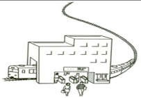
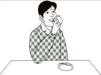

Hai tranh cần đáp án nguồn hoặc hình rõ hơn:


# Báo cáo đối chiếu 12 đề ngữ pháp IKIGAI Ngày biên tập: 11/11/2026. Nguồn đối chiếu là đúng 12 Word người dùng chỉ định, bài 1–2 đến 23–24, và ZIP tiến độ `IKIGAI_GRAMMAR_12_TESTS_PROGRESS_197.zip`. Đã dựng 644 câu trắc nghiệm từ các nhóm câu/yêu cầu trong 12 Word, gồm 642 câu có đáp án tự chấm và 2 câu hình ảnh chưa chốt đáp án. Giữ đủ 197 mã câu của ZIP tiến độ trong ngân hàng ôn riêng, có nhật ký 8 chỉnh sửa nội dung. Tổng dữ liệu là 841 bản ghi, **không có nghĩa 841 câu gốc**. Một số câu cũ trùng kiến thức với câu nguồn hoặc được bổ sung từ từ vựng, nên không cộng chúng vào số câu đối chiếu nguồn. Chưa xác nhận hoàn tất mọi đáp án. Hai câu hình chưa rõ, các tình huống biên tập thêm và việc chưa thử Supabase thật được nêu riêng bên dưới. ## Cách đếm và truy vết Một “câu nguồn theo nhóm” là một câu hỏi, một dòng tự luận, một đích đọc Kanji, một mục tranh hoặc một ô hội thoại cần trả lời. Các ô trống trong cùng câu liên quan chặt được gộp vào bốn đáp án tổ hợp. Các dòng ví dụ có sẵn lời giải, tiêu đề, thông tin học viên, chú giải và các đoạn văn bị lặp do hộp văn bản không được tính là câu hỏi mới. Sáu câu sắp xếp có dấu ★ ở bài 17–18 chuyển thành chọn câu đầy đủ, dùng các thành phần nguồn, thay vì đoán vị trí dấu ★ sau trích xuất. | Đề | Câu nguồn theo nhóm | Ô/yêu cầu trả lời nguồn | Câu có đáp án chấm | Chờ xác minh | Câu tiến độ giữ lại | |---|---:|---:|---:|---:|---:| | Bài 1–2 | 31 | 39 | 31 | 0 | 13 | | Bài 3–4 | 45 | 52 | 45 | 0 | 21 | | Bài 5–6 | 57 | 60 | 55 | 2 | 11 | | Bài 7–8 | 68 | 78 | 68 | 0 | 14 | | Bài 9–10 | 43 | 50 | 43 | 0 | 14 | | Bài 11–12 | 49 | 59 | 49 | 0 | 17 | | Bài 13–14 | 65 | 76 | 65 | 0 | 16 | | Bài 15–16 | 67 | 80 | 67 | 0 | 20 | | Bài 17–18 | 55 | 70 | 55 | 0 | 16 | | Bài 19–20 | 52 | 55 | 52 | 0 | 15 | | Bài 21–22 | 67 | 74 | 67 | 0 | 21 | | Bài 23–24 | 45 | 48 | 45 | 0 | 19 | | **Tổng** | **644** | **741** | **642** | **2** | **197** | “Ô/yêu cầu” đếm cả các chỗ cần chia động từ hoặc điền trợ từ; mục chọn tranh hay trả lời tự luận tính mỗi dòng một yêu cầu. Do gộp ô, số câu trắc nghiệm nhỏ hơn số ô nguồn; không được dùng một số đếm duy nhất để kết luận bỏ sót. | Đề | Số câu chuyển thể theo từng mục, từ mục 1 trở đi | Số ô/yêu cầu nguồn theo từng mục | |---|---|---| | Bài 1–2 | 5, 5, 6, 5, 5, 5 | 6, 12, 6, 5, 5, 5 | | Bài 3–4 | 8, 8, 8, 6, 10, 5 | 8, 14, 9, 6, 10, 5 | | Bài 5–6 | 5, 7, 15, 5, 5, 10, 5, 5 | 5, 10, 15, 5, 5, 10, 5, 5 | | Bài 7–8 | 20, 12, 7, 8, 5, 4, 7, 5 | 20, 12, 17, 8, 5, 4, 7, 5 | | Bài 9–10 | 7, 6, 5, 10, 5, 5, 5 | 7, 6, 12, 10, 5, 5, 5 | | Bài 11–12 | 11, 6, 8, 7, 5, 5, 7 | 11, 6, 18, 7, 5, 5, 7 | | Bài 13–14 | 10, 9, 11, 4, 4, 5, 6, 10, 6 | 10, 20, 11, 4, 4, 5, 6, 10, 6 | | Bài 15–16 | 20, 9, 10, 5, 8, 10, 5 | 20, 20, 10, 5, 10, 10, 5 | | Bài 17–18 | 10, 11, 5, 4, 4, 5, 5, 6, 5 | 10, 22, 5, 4, 8, 5, 5, 6, 5 | | Bài 19–20 | 5, 5, 9, 6, 12, 5, 5, 5 | 5, 5, 10, 8, 12, 5, 5, 5 | | Bài 21–22 | 20, 14, 7, 5, 5, 4, 7, 5 | 20, 14, 14, 5, 5, 4, 7, 5 | | Bài 23–24 | 10, 6, 8, 11, 5, 5 | 10, 9, 8, 11, 5, 5 | `audit/source-reconciliation.csv` có 644 dòng: mã câu, đề/mục/thứ tự nguồn, đáp án hoặc PENDING, đoạn nguồn theo chỉ số đoạn, ảnh, đích đọc và ghi chú chuyển thể. `audit/source-inventory.json` lưu toàn bộ văn bản trích xuất theo đoạn, ranh giới từng mục, tên file và SHA-256 của 12 Word. Chỉ số đoạn là thứ tự đoạn trong XML, không phải số trang Word. ## Hai câu chưa thể chốt đáp án 1. `IKG-GRAM-03-M03-Q04`: bài 5–6, mục 3, tranh 4 (`grammar-assets/3/image4.jpeg`). Hình tòa nhà không có nhãn rõ để xác nhận là trường học hay công ty. Chưa có đáp án gốc để phân biệt chắc. 2. `IKG-GRAM-03-M03-Q06`: bài 5–6, mục 3, tranh 6 (`grammar-assets/3/image6.jpeg`). Người đưa vật nhỏ lên miệng; chất lượng nét không đủ để chốt vật đó là đồ uống, đồ ăn hay điếu thuốc. Tranh 7 có khói, gạt tàn và bao thuốc nên xác định được; không dùng tranh 7 để suy ngược nội dung tranh 6. Hai câu vẫn có bốn lựa chọn và hình gốc trong bản đọc đối chiếu, `correct=null`, `verification=needs_review`. Không có khóa đáp án suy đoán đi kèm và giao diện tự loại chúng khỏi số câu chấm điểm. Bài 5–6 vì vậy có 57 bản ghi nguồn nhưng chỉ 55 câu làm bài. Cần đáp án gốc hoặc bản hình rõ hơn để khóa hai câu này. Trích xuất và giữ đủ 32 ảnh nhúng trong các Word bài 1–2, 5–6, 13–14. Các ảnh ví dụ/ngữ cảnh vẫn được giữ trong thư mục tài sản, dù không tạo thêm câu hỏi để tăng số lượng. ## Giữ và rà soát 197 câu tiến độ Đủ 197 mã câu cũ được giữ; không đổi khóa chữ cái A/B/C/D của các câu cũ. Tám sửa đổi có cả giá trị trước và sau trong `audit/approved197-review.json`: - `IKG-GRAM-01-SRC-01`: アメリカじん và アメリカ人 là cùng đáp án; thay phương án trùng cách đọc. - `IKG-GRAM-01-SRC-02`: は và も đều có thể tạo câu đúng; thêm nghĩa cần kiểm tra. - `IKG-GRAM-02-SRC-NUM-04`: Không coi ななじ là sai tuyệt đối ở mọi tình huống giao tiếp. - `IKG-GRAM-03-READ-06`: 何 có cả cách đọc なに/なん; thêm ngữ cảnh なにを. - `IKG-GRAM-06-SRC-02`: Hỏi tốc độ phương tiện, dùng 速い thay cho 早い. - `IKG-GRAM-08-01`: Giới hạn ý xin phép; 使ってもいけないですか có thể là câu mang nghĩa khác. - `IKG-GRAM-11-01`: Sửa 世界→日本 để tránh khẳng định Fuji cao nhất thế giới; giới hạn thì và kiểu câu. - `IKG-GRAM-12-02`: Nêu rõ người cho và người nhận lợi ích để loại ngữ cảnh khác của いただく. Phát hiện 22 nhóm trùng theo cùng đích đọc/đáp án trong một đề hoặc câu hỏi trùng sau chuẩn hóa dấu cách. Không xóa các mã đã duyệt; giữ chúng trong menu ôn 197 câu. Menu nguồn tách riêng nên các câu này không làm tăng số câu nguồn hay điểm của đề nguồn. Câu bổ sung như đọc 私/先生 ở bài 1–2 không được nhận là mục đọc Kanji nguyên gốc của Word. ## Các sửa đổi nguồn đáng lưu ý - Bài 1–2: chuẩn hóa câu bị ngắt dòng ở mục trợ từ; giữ ba ô của câu tờ báo. Thêm quốc tịch nhân vật cho hai ô hỏi/đáp quốc tịch. Tên TUAN là căn cứ cho túi; hình từ điển không xác định chủ sở hữu nên câu hỏi cá nhân được thêm yêu cầu khẳng định/phủ định. - Bài 3–4: giữ các số 8300, 42300, 542800 và năm mốc giờ; không dùng ななじ làm phương án sai tuyệt đối. Các câu về giờ hiện tại, thứ hiện tại, giá, lớp học và lịch học chuyển sang chọn kiểu thông tin/cấu trúc với dữ kiện minh họa. - Bài 5–6: 15 mục tranh được ghi đủ; hai mục chờ xác minh như trên. Giữ 10 ô hội thoại. Không nhầm “7 giờ kém 15” với “7 giờ 15”. - Bài 7–8: 7 câu đọc chứa 20 đích Kanji, tách thành 20 câu. Không nhầm người cho vay/đi vay, cho/nhận, dạy/học. Mục trợ từ có 17 ô, được gộp trong 7 câu. - Bài 9–10: mục 5 ghi `5点×2=10` nhưng có 5 câu; ghi nhận có khả năng đảo điểm/số lượng. Hội thoại có ngân hàng たこやき nhưng câu trả lời nói いか: sửa câu hỏi thành có いか; không đánh đồng hai món. Câu 魚がいます chỉ dùng ngữ cảnh cá sống để tránh nhầm với thực phẩm. - Bài 11–12: sửa 早い→速い trong so sánh tốc độ. Hội thoại kể quá khứ nhưng ngân hàng có すずしいです: sửa thành 涼しかったです. Câu gia đình “両親と妹が3人” được làm rõ thành bố mẹ, ba em gái và người nói. Sửa chú giải 黒澤明 là đạo diễn, không phải tên phim; giữ lời nhận xét của nhân vật trong phần đọc. - Bài 13–14: bảng chia động từ có 11 mục trả lời, không tính ví dụ 読みます→読んで. Mục trợ từ có 20 ô. Giữ hai nhóm tranh, mỗi nhóm 4 câu. Bài đọc gọi người kể là みやこ ở câu hỏi dù đoạn văn không tự nêu tên; báo rõ cách quy chiếu này. - Bài 15–16: sửa ポールペン→ボールペン. Câu nguồn 学校へ（寝ます） được sửa thành 学校へ（行きます）, đủ ba ô 起きて・食べて・行きました. Không coi よく là いつも. Không có nội quy JVS hoặc bản đồ tuyến xe trong nguồn: các câu này dùng **quy định/lộ trình giả định được ghi ngay trong câu hỏi**, không tuyên bố đó là nội quy hay tuyến đường thật. - Bài 17–18: giữ 22 ô trợ từ; 4 câu mục 5 gộp cả chia động từ và chọn vế tiếp theo. Các câu `まで/までに` nêu rõ nghĩa hạn chót khi cần. Câu sắp xếp được đổi sang chọn câu hoàn chỉnh vì vị trí ★ trong bản trích xuất không đủ chắc để suy luận vị trí ô. - Bài 19–20: mục trợ từ đầu phần ghi 5 nhưng có 9 câu với 10 ô. Mục chia dạng có 6 câu với 8 ô. Chuẩn hóa thành cặp ～たり、～たりしなければなりません. Các câu trải nghiệm phân biệt ～たことがある với ～ることがある; không đặt hai câu đúng khác nghĩa vào cùng câu hỏi không có ngữ cảnh. - Bài 21–22: câu ví dụ/nguồn nói Fuji là núi cao nhất **thế giới** được sửa về **Nhật Bản** ở câu tiến độ; mục đọc vẫn kiểm tra đúng từ gốc. Sửa 熱い→暑い khi nói thời tiết, できすか→できますか; câu hỏi kế hoạch 見学した→見学する. Ngày nóng nhất được giữ là ý kiến nhân vật chứ không biến thành kết luận khí hậu. - Bài 23–24: phần đọc Kanji ghi `1×10=20` và trợ từ ghi `2×18=18`, nhưng thực tế có 10 đích đọc và 9 ô trợ từ. Không suy số câu từ phép nhân bị lỗi. Sửa 公園を遊びに→公園へ遊びに, マン先生に…送ってくれました→マン先生が…送ってくれました. Chuyển mời cà phê sang ごちそうになる cho tự nhiên. Văn bản kể đi xe máy nhưng lúc về được đưa đến ga: giữ dữ kiện và ghi nhận thiếu giải thích, không tự thêm chuyến đi. Toàn bộ ghi chú biên tập theo mã nằm trong `audit/editorial-notes.json`; ghi chú đoạn đọc nằm cạnh đoạn văn trong bản HTML. Các đáp án tự luận có thể có nhiều cách nói; bản trắc nghiệm chọn một phương án hợp cấu trúc trong bốn lựa chọn, không tuyên bố đó là lời đáp tự luận duy nhất. ## Furigana và đáp án Hiển thị ruby phía trên Kanji ở câu hỏi, lựa chọn và 12 đoạn đọc. Các đích kiểm tra cách đọc được loại ruby cả khi lặp trong ngữ cảnh, tránh làm lộ đáp án. Không gán cách đọc cho chữ số Ả Rập một cách máy móc; các từ như 二日, 一人, 二人, từ chỉ ngày/tháng và cách gọi お母さん được xử lý theo ngữ cảnh. Kiểm tra tự động không còn Kanji ngoài từ điển hiển thị trong câu hỏi/lựa chọn/đoạn đọc, nhưng điều đó không phải bằng chứng mọi cách đọc đều được chuyên gia độc lập duyệt. Đáp án được tự giải và rà soát cùng nguyên tắc chỉ có một lựa chọn phù hợp với ý câu hỏi. Không có đáp án chính thức đi kèm 12 Word để đối chiếu độc lập. Các thông tin tự sự như lễ đền, giờ học, nội quy, đời sống nhân vật được dùng **theo văn bản**, không xác minh như thông tin hiện hành ngoài đời. Tham khảo nguyên tắc cho–nhận từ [Japan Foundation](https://www.jpf.go.jp/j/project/japanese/teach/tsushin/grammar/201409.html). Đây là nguồn hỗ trợ ngữ pháp, không phải đáp án cho bộ Word. ## Kiểm tra kỹ thuật và giới hạn tích hợp - Kiểm tra 841 mã duy nhất, đủ 197 mã cũ, 644 khóa nguồn, bốn lựa chọn khác nhau mỗi câu, khóa A/B/C/D hợp lệ cho 839 câu đã có đáp án và hai khóa null đúng trạng thái chờ xác minh. - Kiểm tra biểu diễn ruby ghép lại đúng nguyên văn từng câu/lựa chọn; kiểm tra đích đọc không được gắn ruby; kiểm tra tệp ảnh tham chiếu tồn tại và giữ nguyên ảnh nhúng. - Kiểm thử mô phỏng đầy đủ 24 lượt đề (12 đề nguồn + 12 đề tiến độ), 642 + 197 câu: chọn đúng toàn bộ đạt 100; thêm trường hợp sai toàn bộ, hết giờ, lưu lỗi rồi thử lại, đóng giao diện khi đang lưu, khóa đáp án không hợp lệ. - Kiểm tra trực tiếp trên trình duyệt cục bộ: một đề 31 câu chấm đúng 100/100; gửi điểm qua kết nối **giả lập**; Kanji kiểm tra đọc không có ruby; câu thông thường và lựa chọn có ruby; ảnh gốc hiển thị. - SQL loại cả hai giới hạn xem trước 3 câu, bổ sung mã lượt làm và phiên bản để tránh trộn điểm khác bộ đề; giữ lịch sử. Chưa chạy SQL trên PostgreSQL/Supabase thật, chưa thử đăng nhập học viên thật và chưa triển khai lên IKIGAI WORLD. Cần kiểm tra sau tích hợp theo hướng dẫn đi kèm. - Chưa tái tạo hay xuất Word mới; không tuyên bố đã xác minh bố cục từng trang của Word. Bản đối chiếu là HTML có đáp án, hình và đoạn đọc, cùng dữ liệu JSON cho ứng dụng. RLS được viết theo [tài liệu Supabase](https://supabase.com/docs/guides/database/postgres/row-level-security): người dùng đăng nhập thao tác kết quả của chính họ. Chưa kiểm tra các policy khác đang tồn tại trong dự án thật. Chấm điểm hiện chạy phía trình duyệt, phù hợp chức năng luyện tập; chưa phải cơ chế thi có máy chủ bảo vệ đáp án. ## Nội dung gói thay đổi Ba tệp chạy chính được thay đổi so với ZIP 197: JSON, JavaScript, CSS; thêm ảnh, bản HTML để đọc đáp án và báo cáo. SQL migration được cập nhật. `manifest.json` liệt kê từng tệp và mã băm; không chứa lại các Word gốc, không chứa bản `app.js`/`index.html` cũ và không chứa trang/kịch bản kiểm thử tạm. Thực hiện theo `HUONG_DAN_CAP_NHAT.md`. Giữ nguyên mã nguồn IKIGAI WORLD hiện tại ngoài các phần chỉ rõ trong hướng dẫn.